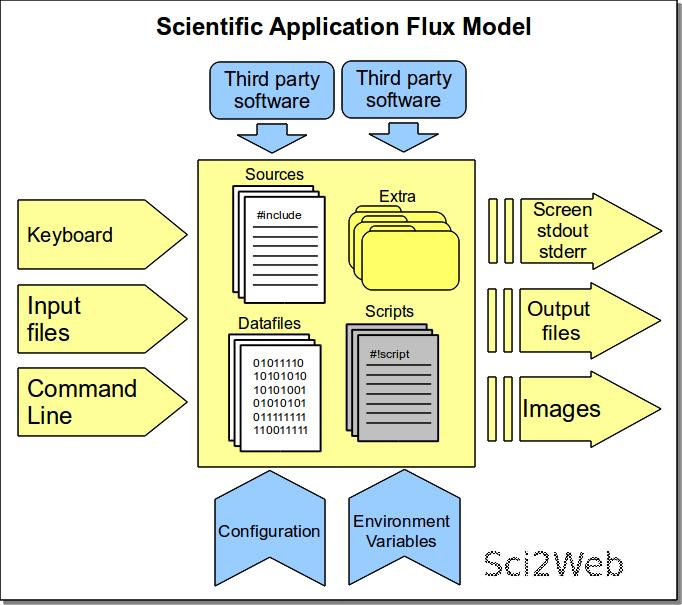

Developer Guide
| Author: | Jorge Zuluaga |
|---|---|
| Version: | Revision 1, Wed Nov 30 06:29:15 COT 2011 |
| Copyright: | This document has been placed in the public domain. |
Table of Contents
Abstract
This document explains how to port a scientific application (SA) to a Sci2Web server site. The process of porting a SA starts by testing your application at the web server where it will be installed. You need to be sure that your application runs properly from the command line before trying to configure and control it from a web interface. If the application depends on third party software (libraries, languages, external packages, etc.) they should be installed in the web server or simply copied among the application files. By porting an application to Sci2Web minor modifications should be done on the application source files (if available) and no web or graphical programming is required at all. This is the most important advantage of using Sci2Web: it allows you to create a friendly interface to your applications with a minimum effort. Many properties of the web interface and the mechanisms used by Sci2Web to control the preparation and running of the application can be configured and customized as will be explained here. For the developer other details of the Sci2Web such as the directory structure of the server site or a brief list of critical scripts are provided at the end of this document. If you want to install a Sci2Web server site at your own computer please read the Installation guide. On the other hand if you have already ported an application and want to test it read the Sci2Web user guide.
Presenting Sci2Web
Sci2Web is a web framework intended to provide web interfaces to Scientific Applications (SAs). A Scientific Application is a piece of software developed or adapted by scientist to solve scientific problems. Although it is common today to find powerful software providing advanced graphical and user interfaces (e.g. Reduce, SAGE, Mathematica, Matlab), a huge fraction of the specific software developed and/or used by scientist still relies on programs developed in low level programming languages (C, fortran). Even although a growing number of scientist are using powerful and modern programming languajes (C++, Java, Python) their programs still have simplified user interfaces and most of them lack of a proper graphical interface.
In most cases SAs simply does not require to have such advanced user or graphical interfaces. Most of the time scientists restrict their programs just for their personal use or share it only with close colleagues and students. But from time to time a good piece of code arises having the potential to become a publickly available SA. The decision to share a SA and allows other to use it is a wise decision that in some cases have a very positive impact on the visibility of scientific work. However the development of software intended for what we can call final users and although they could be experts, is challenging even for a skillful scientific developer. Many skills are required ranging from operating system programming to advanced graphical interfaces development.
Sci2Web is a solution created for those scientist who desire to share the software they developed with a wider scientific community but to the lowest developing cost. It provides the means to configure a fully albeit simple web interface even to very complex scientific applications without the burden of change the original software or develop advanced graphical interfaces. But Sci2Web is much more than that. It provides you a platform to publish your application in the web, automatically generate properly prepared tarballs of your software, give access to related papers and other information important for the visibility of your scientific work, among other features. To know many of the advantages offered by Sci2Web read the white paper.
If you want to see a living example go now to the MercuPy, the sample application served in the home site of the project.
Sci2Web is not a content or a version management software. It simply provides the required tools to configure and run SA applications in the web.
Porting an application to Sci2Web
Quick start (Summary)
If you have not enough patience to read the rest of this document and think that you can interpolate many of the details regarding the configuration of a new Sci2Web application, follow the next steps and get an usable web interface to your SA in a couple of minutes.
Important
You can test this procedure using the example application, Diffusion, coming along with the documentation of the server site. The example application files are located at doc/examples. To start copy the application to the apps/bench directory to work in a clean directory:
% cp -rf doc/examples/Diffusion apps/bench
Place all your application files and any other third party files in a single directory. For the example application the directory will be apps/bench/Diffusion.
Test your application in the command line and be sure it runs properly solving all the potential dependencies.
Initialize your application as a Sci2Web application:
% SCI2WEB_PROJPATH/sci2web.pl init --appname <ApplicationName> --vername <VersionName> --emails <ContributorEmails> --changeslog <ShortDescription>
For the first version of the newly ported application we recommend to use the name "dev" (development). This version could be used by the developer to develop new improvements and will change in a rutinary way. For the example application:
% SCI2WEB_PROJPATH/sci2web.pl init --appname Diffusion --vername dev --emails test@sci2web.org --changeslog "Development version"
Important
At this point you can add the SCI2WEB_PROJPATH path to your system path in order to make simpler the call to the sci2web utility scripts such as sci2web.pl. Perform this by adding to your .bashrc file or any other equivalent session file the line:
% export PATH=$PATH:SCI2WEB_PROJPATH
where SCI2WEB_PROJPATH is the directory where Sci2Web server site has been installed (e.g. /var/www/html/Sci2Web).
This procedure will create the Sci2Web configuration directory sci2web at your application.
Edit the application configuration file sci2web/version.conf and set the most important properties of the application as desired.
Identify the control variables (variables the final user could change using the web interface) and describe them in the sci2web/.variables.info.temp template file.
Identify those files containing the control variables, create templates for each of them and replace the control variables for the respective substitution rule. Example:
% cp parameters.ini .parameters.ini.temp
Original content:
10000 0.1 3 5
New content:
[[NumberParticles]] [[MeanFreePath]] [[Width]] [[Heigh]]
(optative) Identify the results variables and describe them using substitution rules in the file sci2web/.results.info.temp.
(optative) Modify the code to allow pausing, stopping and resuming actions. Also include code to check the status of the execution.
Compile information about the control and result variables and fill automatically other configuration files for the application:
% sci2web/bin/sci2web.pl contvars --appdir .
Before continue check the sci2web/controlvars.info file and check that the variable substitution rules and the tabs/group classification are as you expected.
If an error occur or you want to change the parametrization remove the file sci2web/.hashvars and run again the previous command.
Check the generation of source files from template files using the default value of control variables:
% sci2web/bin/sci2web.pl genfiles --runconf sci2web/templates/Default.conf --rundir .
Check that the source files of your project has been properly generated and test again your application from the command line.
For further configuration of your application edit the following files following the instructions outlined in their templates (we assume that all the files are in the sci2web subdirectory): runpipeline.conf, resultswindows.conf, sharedfiles.info, outfiles.info
Important
A very important step you should perform before to test your application is to properly signalize the execution of your program. The run pipeline of Sci2Web requires that the application creates a signal file with the name end.sig when it has successfully finished. You can include the command to create this file in your source codes, in a run script or in your makefile.
Test the run pipeline:
% bash sci2web/bin/sci2web.sh clean % bash sci2web/bin/sci2web.sh compile % bash sci2web/bin/sci2web.sh submit
Install your application version in the Sci2Web server site:
% SCI2WEB_PATH/bin/sci2web.pl install --appdir .
Create a release of the application (public version):
% SCI2WEB_PATH/bin/sci2web.pl newversion --appname Diffusion --tempver dev --newver 1.0
Test it in the web!
Detailed procedure
The problem
The scenario: you have just finished to debug a piece of sofware you have been using in your research. The software seems interesting enough for other scientists working in your field and you finally decided to share it with colleagues. Our example application, Diffusion for example simulates the diffusion of dust particles inside a 2-D box and determines where at the box walls the dust particles emerge.
Your software is a bunch of source files written probably in different languages, data files, scripts and third party tools (binaries, libraries, header files, etc.) included or not among your files. For example Diffusion is a simple application consisting of a C source file (diffusion.c), a header file (diffusion.h) a plain text configuration file (parameters.ini) and a gnuplot script (plot-out.gpl). Additionally a Makefile is provided to simplify the compilation of the C program.
The user interacts with your program in different ways. It is probably that your software uses specially formatted input files (e.g. the parameters.ini file) to set up the program and takes other input data, on which probably the action occurs, from other data files. It is also possible that some information enters to your programs and scripts through the command line (e.g. the program diffusion.out should be invoked with the name of the output file, ./diffusion.out salida.txt). More strange is that your software depends on some input given from the keyboard. In that case and as a general rule of thumb we recommend to avoid any interactive input since it will make harder to run the program in batch mode (unsupervised runs).
The output of the program can be also diverse ranging from data going to the standard output and standard error, new data files and why not a figure or a plot produced by some plotting program (e.g. gnuplot). Again we recommend that all plots produced by your software be redirected to an image file eliminating any dependence of an available X connection. Our example application puts in the standard output a summary report of the diffusion of selected dust particles and creates files for those particles with the coordinates of the particle at each step in a scratch directory.
If you are organized enough your application includes also a simple documentation prepared in some kind of readable format (text or html files). Diffusion for example includes a README file.
All these features are typical of most of the applications developed by scientist as part of their research. We are calling here this type of software Scientific Applications, SA. A pictorial model of the structure and interface of a generic SA is depicted in the following figure.
The first condition you have to meet in order to configure and control your application with Sci2Web is that the application compiles and run properly from the command line. You should perform this test in order to check if all the third party software (inlcuding compilers and libraries) are installed. Another reason to make this first test is to see if the program at run time is able to load share libraries an issue not always easy to solve.
Preparing the application
It is time to configure your application in order to use Sci2Web as a web interface to control it. In the following we will call this procedure Application Porting.
Our example application has the following components:
- Source files: diffusion.c, diffusion.h, Makefile.
- Input files: parameters.ini
- Third party software: C compiler (external), gsl library (external) and gsl header files (included among the files of the application).
- Extra: an empty directory called scratch where temporal data files are stored in running time.
In order to run the application we should compile it:
% make diffusion.out
and run it passing the name of the output file through the command line:
% ./diffusion.out salida.txt
The application computes the trajectory in a random walk of a given number of dust particles (by default 5000) inside a two dimensional rectangular box. The purpose is to compute several statistical properties of the system such as the average number of dispersions and the final distribution of dust particles in the box walls.
When the program is ran, it shows in the screen (standard output) the last position of a selected number of particles (by default 1 each 100). Additionally, for the particles whose position is shown in the screen the program stores all the points in its random trajectory. The trajectory is stored in the directory scratch in files called path-<i>.dat where <i> is the number of the particle.
The next steps require some help of a set of special scripts called the Sci2Web utility scripts. The scripts are located in the directory SCI2WEB_PROJPATH/bin where SCI2WEB_PROJPATH is the directory where Sci2Web was installed in your server (e.g. /var/www/Sci2Web). You may want to include this directory in your path to simplify the following steps:
% export PATH=$PATH:SCI2WEB_PROJPATH
In other case you will have to invoque the scripts using the complete path.
Initialize your application as a Sci2Web application
All the Sci2Web configuration information about your application is stored in specially formatted files that should be copied and edited in the directory of your application. You can initialize all those files with a single command using the perl utility script sci2web.pl:
% SCI2WEB_PROJPATH/sci2web.pl init --appname <ApplicationName> --vername <VersionName> --emails <ContributorsEmails> --changeslog <ShortDescription>
where <ApplicationName> is the name of your application and <VersionName> is the name of the version you are presently configuring. <ContributorsEmails> is a list of the ; separated e-mails of the contributors of this version of the application. The contributors emails will be used to identify which users has administrative grants on the version web page. <ShortDescription> is a short description of this version and how it is different from previous versions.
Important
Applications in Sci2Web should have proper names that will be used to identify them not only in the database, the filesystem or in all the programs of the tool, but also in the web pages of the server site. We strongly recommend to choose properly the names of you applications. For example avoid the use of cryptic names or very short or encoded names and please DO NOT use spaces or special symbols in the names of your application.
Each Application could have multiple versions. This is a very important feature of Sci2Web. Since scientific application evolve sometimes very fastly and it is hard to ask users to follow any change you make in your application, versions will be the way as the developer takes snapshot of its work and release static versions of the application. If new changes must be done on a given version of your application is better to create a new version instead of changing an existing one. To reduce the burden of create versions for any change you make on your applications (actually not all changes will require the creation of completely new versions being the most critical those that involve the control variables defined in the next section) we recommend the creation of an initial version identified as the dev version. This version could be continuously modified. Final users will not be able to see that version.
To initialize our sample application the command will be:
% SCI2WEB_PROJPATH/sci2web.pl init --appname Diffusion --vername dev --emails test@sci2web.org --changeslog "Development version"
As has been said before the initialization step creates all the configuration files required to set up a Sci2Web application and gather them into a single subdirectory named sci2web. Do not move or change the name of this subdirectory.
Once your application has been initialized you have to fill out the configuration files. Several files are automatically filled using the utility scripts by other ones should be eidted manually. We will explain below which files and how should be edited.
Identifying the control variables
The first step to configure a Sci2Web ported application, is to select the variables that could be controlled by the user. We will call them the control variables. The value of the control variables will be passed by the user using a web form in the Sci2Web interface.
The most natural source of control variables are the input files. In our example application this role is played by the parameters.ini file:
10000 0.1 3 5
The first value in this file is the total number of particles that will be used in the simulation. The second one is the mean free path in program units (see below). The fourth and fifth parameters are the width and height of the box also in the units of the program.
If you want that the user controls the value of all this variables create a copy of this file with the name .parameters.ini.temp (template file) and substitute the values of the variables by:
[[NumberParticles::10000::int::Total number of particules]] [[MeanFreePath::0.1::float::Mean free path]] [[Width::3::float]] [[Heigh::5::float]]
The code between double square brackets is called a substitution rule and have two functions: 1) tag the place in a file where a control variable should be replaced by the value given by the user and 2) provide complete information to Sci2Web about the control variables itself, such as the internal name of the variable, the numeric type and even the help text that will appear close to the input element in the web form (see below).
The general syntax of a substitution rule is:
[[VariableName::DefaultValue::TypeOfVariable::CompleteName::Tab::Group::HelpText::ReadOnly]]
Where:
VariableName: the name of the variable at the programming level. It should obeys the typical rules of variable names (e.g. no blank or special characters)
DefaultValue: default value of the variable and type of input in the web interface. There are different ways to specify the default value of a control variable. Each way determines which input element will be used in the web form:
Single value (e.g. 3): the input is a simple text box.
- Constrained value (e.g. 0<<10==3): the input is a simple text
box. The values between the << symbols are the minimum and maximum values. If no minimum (maximum) value is provided it will be assumed as -1E+100 (+1E+100).
Range of values (e.g. 0--10--1==5): double dash separated range of values plus the default value assumed in that range. In this case the input is performed using a simple text box plus a scroll bar. This method is strongly recommended when certain values of a variable should be avoided.
List of values (e.g. Yes;;No==Yes): double comma separated set of values plus the default selected one. Input is performed using a selection tool.
Another type of input methods are used according to the variable type (see next item):
- Boolean values (e.g. 1 or 0): value is indicated as 1 or 0. Input is performed using a checkbox.
- Files: Input is performed using an upload button.
- Text: Input is performed with a textarea element.
Important
The input method determined by the variable type overrides the DefaultValue specification. For example if you create a variable with Default value Yes;;No==Yes of type text the input will be performed using a textarea element instead of a select element as expected from the default value specification.
Type of variable: most of the types follows the mysql convention without modifiers (e.g. int instead of int(8)). Other types are specific to Sci2Web (text,bool,file). Valid datatypes are: int, float, varchar, bool, file and text.
Complete name of the variable. This name will be used as the text before the input element in the web form.
Tab: the configuration window used to input the application control variables is divided in tabs. Tabs allows you to create group of control variables having different effects on the applications. For example you can distinguish among variables with the value of physical properties of your applications and variables controlling numerical attributes. The Tab field in the substitution rule allows you to classify you control variables. Variables without a Tab attribute will be classified in an All default tab.
Group: in each tab variables are organized by groups. This a second level of organization introduced specially to be used with very complex applications. Variables without a Group attribute will be classified in a General default group.
ReadOnly: this property is used to enable or disable the possibility to change the control variable through the web form. Left blank if you want to enable the input of the variable and use readonly to disable the input.
If you have a control variable in more than one file you should create a template version of those files and place therein the respective substitution rules. In our sample application the file plot-out.gpl contains the number of particles as part of the figure title. In that case create a template copy .plot-out.gpl.temp and put the substitution rule for the control vairable NumberParticles:
name="[[OutputFile::salida::varchar::Name of the output file]]" set title "Diffusion of [[NumberParticles]] particles" set term png set output name.'.png' plot name.'.txt' u 2:3 w p
Please notice that you do not need to use the complete substitution rule in the second template file. This behavior will save a lot of work when parametrizing your application.
It is interesting to notice that control variables are not only associated to values of real programming variables in your source files. Actually they can substitute complete parts of your files regardless the content of the file or the role of the substituted part. In the parameters.ini example the control variable substitute a single numeric value but in the plot-out.gpl example substitute part of a string.
Important
to simplify the parametrization of complex applications we recommend to edit a master template file sci2web/.variables.conf.temp containing the full substitution rules for all the control variables in your application. Using this file will avoid you the burden of filling your application template files with long substitution rules that will be made those file probably prune to errors. In our sample application this master template file could be have the following lines:
NumberParticles=[[NumberParticles::10000::int::Total number of particules]] MeanFreePath=[[MeanFreePath::0.1::float::Mean free path]] Width=[[Width::3::float]] Height=[[Heigh::5::float]] OutputFile=[[OutputFile::salida::varchar::Name of the output file]]
Once this file is created the application template files .parameters.ini.temp and .plot.gpl.temp could just contain simplified versions of the substitution rules. For example the .parameters.ini.temp will now look much readable:
[[NumberParticles]] [[MeanFreePath]] [[Width]] [[Heigh]]
More importantly about the use of a master file to gather the information about the control variables is that you can control there the exact order on which the variables will be organized in the web interface.
There are finally a set of very important variables that should be set up to complete the parametrization of your application. They are called the results variables.
These variables are set up using an already created template file sci2web/.results.info.temp. For our example application we define a result variable called MeanDispersions that will be set after the execution of the application with the average number of dispersions suffered by the dust particles:
sci2web/.results.info.temp: MeanDispersions=[[MeanDispersions::0::float::Average number of dispersions::Results::General::This is a result variable::readonly]]
The tab and group for the results variables should not be modified.
Important
In order to use properly the results variable feature of Sci2Web you should configure your application to write down the value of these variables after the execution of a running instance. For our example application it could be done for example changing the master source file including the following lines:
Original code:
for(i=ini;i<=N;i++){
condition=((i%per)==0 || i==ini);
[...]
j=0;
do{
d=-lambda*log(drand48())*CUSTOM_UNITS;
theta=2*M_PI*drand48();
x=x+d*cos(theta);
y=y+d*sin(theta);
if(condition) fprintf(fp,"%d %e %e\n",j,x,y);
j++;
}while(x*(x-l)<=0 && y*(y-h)<=0);
fprintf(fl,"%d\t%e\t%e\n",i,x,y);
if(condition){
fprintf(stdout,"i = %d, (x,y) = (%.2e,%.2e)\n",i,x,y);
sleep((int)SLEEP);
}
}
New code:
nidsp=0;
for(i=ini;i<=N;i++){
condition=((i%per)==0 || i==ini);
[...]
j=0;
do{
d=-lambda*log(drand48())*CUSTOM_UNITS;
theta=2*M_PI*drand48();
x=x+d*cos(theta);
y=y+d*sin(theta);
if(condition) fprintf(fp,"%d %e %e\n",j,x,y);
j++;
}while(x*(x-l)<=0 && y*(y-h)<=0);
//-------------------->START NEW CODE<--------------------
ndisp+=j;
//-------------------->END NEW CODE<--------------------
fprintf(fl,"%d\t%e\t%e\n",i,x,y);
if(condition){
fprintf(stdout,"i = %d, (x,y) = (%.2e,%.2e)\n",i,x,y);
sleep((int)SLEEP);
}
}
//-------------------->NEW CODE<--------------------
ndisp=ndisp/N;
FILE *fr;
fr=fopen("sci2web/results.info","w");
fprintf(fr,"MeanDispersions=%lf\n",ndisp);
fclose(fr);
//-------------------->END NEW CODE<--------------------
If you cannot change your source file or simply does not want to do it we recommend to use external scripts able to extract the results from any output of the program (standard or standard error, output files, etc.)
Once you have selected the control and results variables and have created the templates from the files where those variables appear you are ready to test the generation of source files for your runs from those templates. This a critical step in the generation of new instances of the application. To perform this important step run:
% sci2web/bin/sci2web.pl contvars --appdir .
If an error occur or you want to change the parametrization remove the file sci2web/.hashvars and run again the previous command.
Here we are using the symbolic link to the utility script binary directory created in the sci2web subdirectory already installed after the initialization of the application.
Important
If you perform any changes in your control variables and want to update the templates for all the application instances already created in Sci2Web you should use the absolute path of the utility script:
% SCI2WEB_PATH/sci2web/bin/sci2web.pl contvars --appdir .
This command create three files in the sci2web subdirectory: controlvars.info, controlvars.sql and templates/Default.conf. The first one is the list of the control variables classified by tabs and groups and properly formatted to be used by the Sci2Web tool. The second one is a sql file that will be used in the installation step to create a table associated to the particular version of the application where the values of the control variables and other results are stored by each run created by the community using the application. It is strongly recommended to avoid the edition of this file. The third and last file, Default.conf is a sample run configuration file containing the value of the control variables that will be used to generate the files for a given run. In this case the values are the default ones defined when the control variables were described using the substitution rules.
Important
The order of tabs, groups and variables in the controlvars.info file will determine the order at which those tabs, groups and variables are displayed in the configuration window. When this file is generated the order is practically arbitrary. It is strongly recommended to check this file and if required change the order to fullfil your expectations about how the web interface of your application should looks like.
At this point you can try to generate the files for your application using the template files and the default run configuration file (sci2web/templates/Default.conf) just created. To perform this run:
% sci2web/bin/sci2web.pl genfiles --runconf sci2web/templates/Default.conf --rundir .
This command will create the run files corresponding to each template you have previously created. In our sample they correspond to the parameters.ini and plot-out.gpl files. Please check these files and verify that they have the proper content. Another file is created run.conf. This is a copy of the run configuration file and can be used to know what are the values of the control variables used in a particular run.
You can play around modifying run.conf and generating again the run files:
% sci2web/bin/sci2web.pl genfiles --runconf run.conf --rundir .
This exercise will give you an idea if your template files and control variable configuration files are properly prepared.
The ultimate test is to generate test run files using a particular set of values properly set up in your run.conf and see if your application compiles and run as expected.
Be sure that you have test it your newly configured application before to proceed with the following steps.
Configure your application
Control variables are the most important component of a Sci2Web ported applications. At this point you have initialized your application and configured how a running instance will be parametrized and generated.
There are other important aspects of your application that need to be configured before to install it at the Sci2Web server site. Please follow carefully the next procedure to complete your configuration:
The running pipeline. In real life every SA is normally ran following a fixed set of system commands, a.k.a. the running pipeline. For example you could start by cleaning the run directory, then you compile your source files, run your application, perform several post-run actions and check your results.
The Sci2Web control scripts run every ported application following a fixed pipeline that should be configured using the sci2web/runpipeline.conf file. You can provide there the explicit commands (<ACTION>CMD, where <ACTION> could be CLEAN, COMPLIE, SUBMIT, etc., see below) or the name of specially prepared scripts (<ACTION>SCR) that should be executed at each step of the running pipeline.
The Sci2Web pipeline recognize the following set of actions:
- Clean. Clean of the run directory. This action should be configured if the run directory must be cleaned before to run the application.
- Compile. Compile the source files of the application. This action should be configured if your application requires some kind of compilation. It should not be configured if you are using already compiled programs or not compiling languages (e.g. perl, bash, python).
- Preparation. Prepare the run directory to run the application. Configure this action if your application require some previous preparation before to run it.
- Submit. Run the application. Here you should say the system what is the particular command used to run your application.
- Pause. Pause a running application. Configure this step only if your application could be paused. Pausing is a special feature of an application that allows you to temporally suspend a running instance and resume it exactly where the computation be when the instance was interrupted. Not all the applications could be paused but if you can program this feature in your source files it could be a very useful property. Leave blank both PAUSESCR and PAUSECMD variables if the application is not pausable. In this case the action Pause will trigger the Kill action on the application.
- Stop. Stop a running application. Here applies the same recommendations given for the Pause step.
- Post. Commands to be executed after the running instance of the application has finished.
- Status. Check the status of the run. The command configured here should be able to return a number between 0 and 1 with the degree of advance of your run. If you are not able to check this return a -1 value as the running status.
The runpipeline.conf file for our example application will look like:
####################################################################### #RUN PIPELINE ####################################################################### #%%%%%%%%%%%%%%%%%%%%%%%%%%%%%%%%%%%%%%%%%%%%%%%%%% #QUEUE SYSTEM: at, batch, pbs #%%%%%%%%%%%%%%%%%%%%%%%%%%%%%%%%%%%%%%%%%%%%%%%%%% QSYSTEM="at" #%%%%%%%%%%%%%%%%%%%%%%%%%%%%%%%%%%%%%%%%%%%%%%%%%% #CUSTOM CLEAN COMMAND OR SCRIPT #%%%%%%%%%%%%%%%%%%%%%%%%%%%%%%%%%%%%%%%%%%%%%%%%%% CLEANSCR="" CLEANCMD="make cleanall" #%%%%%%%%%%%%%%%%%%%%%%%%%%%%%%%%%%%%%%%%%%%%%%%%%% #CUSTOM COMPILE COMMAND OR SCRIPT #%%%%%%%%%%%%%%%%%%%%%%%%%%%%%%%%%%%%%%%%%%%%%%%%%% COMPILESCR="" COMPILECMD="make diffusion.out" #%%%%%%%%%%%%%%%%%%%%%%%%%%%%%%%%%%%%%%%%%%%%%%%%%% #CUSTOM PRE COMMAND OR SCRIPT #%%%%%%%%%%%%%%%%%%%%%%%%%%%%%%%%%%%%%%%%%%%%%%%%%% PRESCR="" PRECMD="make clean" #%%%%%%%%%%%%%%%%%%%%%%%%%%%%%%%%%%%%%%%%%%%%%%%%%% #CUSTOM SUBMIT COMMAND OR SCRIPT #%%%%%%%%%%%%%%%%%%%%%%%%%%%%%%%%%%%%%%%%%%%%%%%%%% SUBMITSCR="" SUBMITCMD="./diffusion.out salida.txt" #%%%%%%%%%%%%%%%%%%%%%%%%%%%%%%%%%%%%%%%%%%%%%%%%%% #CUSTOM PAUSE COMMAND OR SCRIPT #%%%%%%%%%%%%%%%%%%%%%%%%%%%%%%%%%%%%%%%%%%%%%%%%%% PAUSESCR="" PAUSECMD="echo Pausing..." #%%%%%%%%%%%%%%%%%%%%%%%%%%%%%%%%%%%%%%%%%%%%%%%%%% #CUSTOM RESUME COMMAND OR SCRIPT #%%%%%%%%%%%%%%%%%%%%%%%%%%%%%%%%%%%%%%%%%%%%%%%%%% RESUMESCR="" RESUMECMD="echo Resuming..." #%%%%%%%%%%%%%%%%%%%%%%%%%%%%%%%%%%%%%%%%%%%%%%%%%% #CUSTOM STOP COMMAND OR SCRIPT #%%%%%%%%%%%%%%%%%%%%%%%%%%%%%%%%%%%%%%%%%%%%%%%%%% STOPSCR="" STOPCMD="echo Stopping..." #%%%%%%%%%%%%%%%%%%%%%%%%%%%%%%%%%%%%%%%%%%%%%%%%%% #CUSTOM POST RUN COMMAND OR SCRIPT #%%%%%%%%%%%%%%%%%%%%%%%%%%%%%%%%%%%%%%%%%%%%%%%%%% POSTSCR="" POSTCMD="gnuplot plot-out.gpl" #%%%%%%%%%%%%%%%%%%%%%%%%%%%%%%%%%%%%%%%%%%%%%%%%%% #CUSTOM STATUS COMMAND OR SCRIPT #%%%%%%%%%%%%%%%%%%%%%%%%%%%%%%%%%%%%%%%%%%%%%%%%%% STATUSSCR="stat.sh" STATUSCMD="echo -1" .. Important:: The run pipeline of Sci2Web_ requires that the application creates an empty *signal file* with the name ``end.sig`` when it has successfully finished. You can include the command to create this file in your source codes, in a run script or in your makefile. For our example application you could add at the end of the ``diffusion.c`` file the following line:: system("dat +%s.%N > end.sig");It should be mentioned that the <ACTION>SCR value overrides the <ACTION>CMD command. Thus for example in the last part of the previous example file the STATUSSCR is executed beside the fact that a STATUSCMD has been also provided.
It is strongly recommended to test the running pipeline configuration by trying to use the Sci2Web utility script sci2web.sh. This is the script that the Sci2Web web tools will use when trying to control your application. Test it by running:
% sci2web/bin/sci2web.sh clean
If it works as expected by executing the command or script you have configured in the runpipeline.conf file, try to run other and more complex actions:
% sci2web/bin/sci2web.sh compile % sci2web/bin/sci2web.sh pre
The most critical action is the Submit one. Verify that it works as expected:
% sci2web/bin/sci2web.sh submit Executing action submit: Signal: submit Set submit warning: commands will be executed using /bin/sh job 457 at Fri Dec 9 10:56:00 2011
If it works properly not only you will notice that the expected output files of your application will start to appear but also a set of .oxt files are generated: jobid, pid,``time_start``, time_end, stdout, stderr among others. These files contain critical information about the running instance used by Sci2Web to display information related to your run.
If the application runs succesfully the signal file end.sig will be generated. If instead you get the file fail.sig something wrong has happened with the application. Please verify the output files stdout.oxt and stderr.oxt or the running script automatically generated by Sci2Web run.sh.
If any problem is detected please check the runpipeline.conf configuration file and other scripts you are using to run your application.
Important
Sci2Web uses by default the batch execution system at. It will try to execute all the running instances on the local web server despite the fact that the processor is very busy. This is not a recommended configuration and should be used only if you are using Sci2Web for personal purposes.
If you want to work with a different batch execution system the Sci2Web server site manager should add to the SCI2WEB_PROJPATH/bin/queues.sm file the set of routines describing how to submit, check the status and kill the job in the respective execution system. The queues.sm file provided with the present version of Sci2Web contains the routines for the at, batch and torque/pbs execution system. You can write down your version of this routines for different resource managers and schedulers (e.g. LFS, GE, Condor, etc.)
In public servers we strongly recommend to use torque/pbs as the batch execution system. In the Appendixes we have included a complete albeit simple guide to install torque/pbs at a linux server. You could also try to use this system even if you are working on a private server.
The sample application installed with the Sci2Web server site uses by default the at system. You can override this behavior (and we strongly recommend to do it) by changing manually the runpipeline.conf file of every version of this application or override the at submission routines at the queue.sm file. As an example you could tell Sci2Web about changing all the runs submitted with at to do it instead with pbs changing the line:
at|batch)
by:
batch)
and the line:
pbs)
by this other one:
at|pbs)
The utility script sci2web.sh includes another actions that could be useful for other purposes: cleanall, cleans all the run directory including files generated by the control script; test, performs a complete test on the running instance including pause, stop and resume commands; kill, kills the presently running instance; status check the status of the running instance. You can run several action "in tandem":
% sci2web/bin/sci2web.sh cleanall compile pre submit
This is the recommended way to test the running pipeline.
Select common files. When Sci2Web creates a new instance of an application many files could be duplicated what compromises the storage capacity of your web server. Many of those duplicated files could be shared among different running instances reducing the space required to have an active Sci2Web application. You can enumerate the files that will be shared using the sci2web/sharedfiles.info file. One object should be listed per line in this file. For our example application if you want to share the files Makefile and all the files having the name diffussion, and the directory gsl the sci2web/sharedfiles.info will look like:
Makefile diffusion.* gsl
Select output files. When an instance of an application is finished Sci2Web stores by default all the results produced by the application in a results database. It is obvious that many files involved in your application should not be stored since they are repeated among instances or they do not contain useful information. You can use the sci2web/outfiles.info to list, with a similar syntax as that used for the shared files, the most interesting files to be saved as results of your running instance. For our example application this file could look like:
*.dat *.png scratch
All the .oxt and the .conf files, created and used by Sci2Web will be stored by default.
Web interface configuration. The web interface of your application have the following components:
The information web pages. This is a set of editable web pages containing information about your application. These pages could be freely edit by the creator of the application and the crontibutors of the respective version. These pages will be the first thing that a visitor will see when openning the page of your application. It is strongly recommended to include in the web pages information as complete as possible about your application including links to possible documentation (that could be also stored in the server site), download options (if applicable) or links to the Sci2Web documentation (specially to the user guide).
You can disable the information web pages by editing the configuration file sci2web/version.conf and changing the variable VerTabs. This variable controls which tabs and in which order will be displayed in the application web page. There are five fixed tabs: description, documentation, downloads, runs, database. To disable for example the documentation and download tabs, the VerTabs should be:
VerTabs = description:Description;runs:Runs;database:Database
As a special feature you could preserve a given tab but give access to its content just to authorized users (authors and contributors). In this case you just have to add to the tab specification the :private suffix:
VerTabs = description:Description;runs:Runs:private;database:Database
In this case only authors and contributors will see the run tab.
The queue system. Sci2Web manages the execution of running instances of the mutiple applications installed in a server site in a similar fashion that a job queue system. This feature is particularly useful when the installed applications normally takes a long time to be executed. The queue system component of Sci2Web is a specially designed page where a list of the running or already ran applications are displayed. Using this page you will be able to create a new instance (run your application), remove existent instances or control the execution of already created instances.
If your application is too simple and does not require a complete queue system you can switch to a simpler interface called the RunHistory mode. Again the sci2web/version.conf file should be use to modify this behavior:
QueueMode = RunHistory
You can turn back to the queue system changing the name of the variable to QueueList (default choice):
QueueMode = QueueList
The results database. All the run instances succesfully executed with your applications and their result files will be by default stored in a big result database. This is a very useful feature of Sci2Web that could allow a community to access already computed results that in other case will be very expensive to recompute.
Imagine this scenario: your application is able to compute the dynamical evolution of a two planets system changing the initial conditions of the biggest planet. You could vary in a huge parameter space the initial properties of the big planet and every configuration is a single result. After performing a complete parameter space exploration an user could store results that will be useful for others desiring to explore the same or an overlapping region of the parameter space. With the results database all they have to do is to search for the results already computed for that part of the parameter space and compute only new results in the unexplored region.
Sci2Web provide any application with a specially designed page to search for results stored in the database.
If your application is very simple or you do not want to store a big amount of data coming from all the results computed with your application disable this feature using the variable ResultsDatabase in the sci2web/version.conf file:
ResultsDatabase = false
You can turn in this feature in any moment by setting the value of this variable to true.
The configuration form window. Probably the most important component of the whole web interface is the configuration window. This component allows the final user to input the value of the control variables, modify other properties of the running instance and control the execution of your application. There are several attributes of the configuration window that can be customized:
- FilesTab (boolean, default true): Determines if a tab with the list of files associated to the run are displayed or not.
- ControlButtons (boolean, default true): Determines if the configuration window should have the buttons used to control the application.
All these properties can be set up in the sci2web/version.conf file.
The results window. The result window is an important component of the interface intended to display customizable information about the results of the running instance. A separate configuration file sci2web/resultswindow.conf for this component is included and should be edited to change the default behavior:
################################################### #RESULTS WINDOW CONFIGURATION FILE #Use this file to describe your results window ################################################### #%%%%%%%%%%%%%%%%%%%%%%%%%%%%%%%%%%%%%%%%%%%%%%%%%%%%%%%%%%%% #STATUS AND CONTROL TAB #%%%%%%%%%%%%%%%%%%%%%%%%%%%%%%%%%%%%%%%%%%%%%%%%%%%%%%%%%%%% Tab=Status Content=Module:Status RefreshTime=-1 #%%%%%%%%%%%%%%%%%%%%%%%%%%%%%%%%%%%%%%%%%%%%%%%%%%%%%%%%%%%% #STANDARD OUTPUT AND STANDARD ERROR #%%%%%%%%%%%%%%%%%%%%%%%%%%%%%%%%%%%%%%%%%%%%%%%%%%%%%%%%%%%% Tab=Output Content=File:stdout.oxt;File:stderr.oxt RefreshTime=-1 #%%%%%%%%%%%%%%%%%%%%%%%%%%%%%%%%%%%%%%%%%%%%%%%%%%%%%%%%%%%% #FILES TAB #%%%%%%%%%%%%%%%%%%%%%%%%%%%%%%%%%%%%%%%%%%%%%%%%%%%%%%%%%%%% Tab=Files Content=Module:ListFiles?SubDir=.&Filter=* RefreshTime=-1 #%%%%%%%%%%%%%%%%%%%%%%%%%%%%%%%%%%%%%%%%%%%%%%%%%%%%%%%%%%%% #PROPER TIES OF THE CONFIGURE AND RESULTS WINDOW #%%%%%%%%%%%%%%%%%%%%%%%%%%%%%%%%%%%%%%%%%%%%%%%%%%%%%%%%%%%% Stacking=cols Sizes=40%,60%
As you can see there is an entry for every tab you want to include in the results window. Every entry has three properties: Tab (name of the tab), Content (content of the tab) and RefreshTimes (time to refresh the content of the tab).
The content of a tab could be selected among these options:
File: the content of the tab will the content of the file indicated after ':'. The default file path is the run directory.
Module: a particular module programmed into the Sci2Web tools. Available modules are:
- Status: show the status of the run. No parameters are required.
- ListFiles: list of files of a given subdirectory in the run directory. Parameters: SubDir, Filter.
- Gallery: an image gallery. Parameters: Criterium.
Parameters are given to modules using the same syntax as php scripts using an initial ? and & to separate different module parameters.
The RefreshTime is given in milliseconds. You should be careful to not set a very small refresh time for your tabs because it could load your web server with apache2 zombie processes.
At the end of this configuration file you will be able to set up the properties of a framed version of the configuration and results windows. For small applications it is more comfortable to have a single window where the configuration form and the results are displayed together. This is the function of this tabbed window. You can select here if you want that the configuration and results frames be stacked horizontally (cols, this is the default) or vertically (rows). You can also modify the relative sizes of the frames.
Installing your application in your Sci2Web server site
The last steps in order to have your application succesfully installed in the Sci2Web server site is to copy the application files in the server directory and register your application in the master database. Before to perform this last and critical step be sure that the application directory is cleaned for all temporal files generated during the testing phases:
% sci2web/bin/sci2web.sh cleanall
To install the application automatically use the utility script:
% SCI2WEB_PATH/bin/sci2web.pl install --appdir .
Important
Notice that you should call the utility script sci2web.pl using the absolute path instead of using the symbolic link to the bin directory. This command will fail to install your application:
% sci2web/bin/sci2web.pl install --appdir .
If accidentally you have installed your application including a lot of temporal files you will still be able to clean the application of the extra files by going directly to the installed application, e.g. apps/Diffusion/dev, and running there the cleanall command.
If something has gone wrong with the installation you can always remove the application, correct the problems and reinstall it. Remove the application using the command:
% SCI2WEB_PATH/bin/sci2web.pl remove --appname <Application>
Important
With this procedure you have installed the development version, dev. This version will be only visible to the application authors and the version contributors. In order to release your application and allow other users to use it you need to create a public version from a copy of the just created developmente version. Run this command (we use here the names of the example application):
% SCI2WEB_PATH/bin/sci2web.pl newversion --appname Diffusion --tempver dev --newver 1.0
where 1.0 is the code name of the new version. Each time you create a new version from an existing one it is strongly recommended to edit the configuration file version.conf and change several properties that the automatic procedure will not modify (e.g. ChangesLog or version brief description).
If you really appreciate to know what are the details of the procedure outlined before and/or want to know more precisely why all the previous command are used and how can they be modified, you can read in the following subsections a detailed description of the application porting procedure.
Testing your newly ported application
If everything has been ran smoothly up to this point you are ready to start using your application with a brand new web interface!
But, wait a minute! Your work has not ended here. Probably it has just started. As every programming task you do not end until you have ran and test your application in its final form. So go to the Sci2Web server site URL, sign up or sign in into an account and start testing your application. Seeing your application in action will give you hints to modify the configuration you have just completed. The process will finish only when you are completely satisfied with the result. And even thens you will still have to wait for the bug reports the user community using your application will start to send you.
From now on, start to work directly in the application directory at your Sci2Web server site. Only the changes performed there will be reflected in the running instances created from the web interface.
Good luck!
Sci2Web server site anatomy
Directory structure
Sci2Web server site is a complete and functional website. Its structure is similar to similar web project but it has additional features that allow it to work as a portal for on-line applications and data repository.
His main directories and subdirectories are:
bin
Directory containing the utility and cgi scripts. Almost every functionality in the server site is coded there.lib
Libraries of routines and global variables for the cgi scripts. It contains the main configuration file sci2web.conf and the cascade style sheet file for the site sci2web.css.js
- JavaScript files and third party libraries. Specially
- important is the sci2web.js file containing the routines specific of the site. Third party JavaScript libraries used with Sci2Web includes jquery, ckeditor, ckfinder, tabber and domwindow.
tmp
Temporal directory.log
Directory with log files. Specially important is the mail.log file containing the messages generated by the site when it is installed in a server without the e-mail service.images
Directory with images.doc
Documentation, installation and example files. It contains two important subdirectories: install (installation related files) and examples (example applications).pages
Source files for the page contents. The server site have one static page main.php and a dynamic one app.php that is populated with the information of a given application. The pages directory contains the php scripts required to build both pages.
The applications and all the data associated to them are installed in two critical directories:
apps
This is the directory where the apps are installed. It contains three default subdirectories: template (template files required to install a new application), bench (blank subdirectory that can be used to prepare new applications or perform any sort of tests) and licenses (full text of licenses that could be used with the ported applications).
An installed application has a subdirectory named after the short name of the application. Inside this directory every version of the application is located in a separated subdirectory. Other files related to the application such as the global configuration file of the application app.conf, the editable html files describing the application properties (brief description, documentation, downloads), the logotype and other files common to all versions are also located there.
Important
It is important to notice that an application is installed in Sci2Web if there is a subdirectory in the apps directory with its name, BUT ALSO if it has been properly created at the Sci2Web database level. You can check the content of any table of the database from the command line using the command:
% bin/sci2web.pl showdb --describe --table <table> % bin/sci2web.pl showdb --entries --table <table>where <table> could be users, apps, versions, runs or <app>_<version>. To check which applications and versions exists run:
% bin/sci2web.pl showdb --entries --table apps % bin/sci2web.pl showdb --entries --table versionsruns
This directory contains all the critical data resulting from the interaction of users with the server site. It contains one default directory, db, where the results of all the successfully executed instances of the served applications are stored. This information is very important for one of the central purposes of Sci2Web as is to share data coming from executing speciallized scientific software.
Each user registered in the server site has here a subdirectory identified with the e-mail of the user and where all the run instances of every application ran by the user are stored.
Appendixes
Installing and configuring TORQUE/PBS
One of the most popular systems to manage a set of computational resources and schedule jobs to use them is the TORQUE/PBS system. In this section we will explain how to install and configure TORQUE in a linux server and a set of execution nodes connected to them through the network.
You can find detailed description of TORQUE and further details about the configuration of this system in the Administrator Manual at the official site of the project http://www.clusterresources.com/torquedocs.
Get the sources: http://www.adaptivecomputing.com/resources/downloads/torque.
Unpack and install the package in the server:
# tar zxvf torque-<version>.tar.gz -C /usr/local/src # cd /usr/local/src/torque-<version> # ./configure && make && make install # make packages
Create daemons initialization scripts: for each <service> in pbs_server, pbs_sched, pbs_mom do:
# cp contrib/init.d/debian.<service> /etc/init.d/<service> # update-rc.d <service> defaults
Configure:
Create pbs database and basic queue:
# ./torque.setup root
Configure nodes:
# nano /var/spool/torque/server_priv/nodes
<node1> np=<np> <node2> np=<np>
Configure mom:
# nano /var/spool/torque/mom_priv/config
$pbsserver <head_node>
Note
You have to be sure that the server and the nodes IPs, names and aliases are properly configured in the /etc/hosts file. Example:
192.168.0.1 headnode.net headnode 192.168.0.2 node1.net node1 192.168.0.3 node1.net node1
Start services: for each <service> in pbs_server, pbs_sched, pbs_mom do:
# service <service> start
In the compute nodes:
Get Torque/PBS sources.
Configure, compile and install:
# ./configure --disable-server # make && make install
Copy /var/spool/mom_priv/config from the head node to each compute node.
Configure and start the pbs_mom daemon.
Test:
Check nodes:
# pbsnodes -a
Check run:
# su -l <user>
Create a file test-pbs.sh:
#!/bin/bash #PBS -j oe #PBS -o /tmp/test-job.out #PBS -N Test env | grep PBS cd /tmp date ls -R / &> /tmp/test-ls.out date
Submit and check the job:
$ qsub test-pbs.sh $ qstat -a $ qstat -q $ qdel <jobid>
Where jobid is the id of the job you have just submitted.
Enjoy!
Copyright (C) 2011 Jorge I. Zuluaga